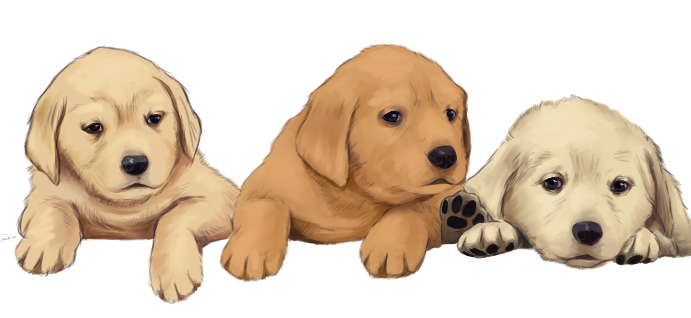

{% extends 'layout.html' %} {% block content %}
<div class="container col-xxl-8 px-4 py-5">
    <div class="row flex-lg-row-reverse align-items-center g-5 py-5">
        <div class="col-12 col-lg-6">
            
        </div>
        <div class="col-lg-6">
            <h1 class="display-5 fw-bold lh-1 mb-5 banner__title">
                Intro<span>Dog</span>? 🐕
            </h1>
            <p class="lead">
                "IntroDog" 은 애견인들의 의견을 교류할 수 있는 사이트입니다.<br />
                반려견을 키우면서 생기는 질문, 일상 등 사소한 것까지 다른 이들과
                함께 교류할 수 있습니다!
            </p>
            <div class="search__bar--wrap">
                <form class="col-8 col-lg-auto mb-3 mb-lg-0 search__bar">
                    <input
                        id="input_kw"
                        type="text"
                        class="form-control"
                        placeholder="궁금한 반려견의 종류를 검색해 주세요!"
                        aria-label="Search"
                    />
                    <button type="button" class="btn btn-secondary btn-search">
                        검색
                    </button>
                </form>
            </div>
        </div>
    </div>
</div>

<!-- Modal -->
<div
    class="modal fade"
    id="exampleModal"
    tabindex="-1"
    aria-labelledby="exampleModalLabel"
    aria-hidden="true"
>
    <div class="modal-dialog modal-dialog-centered modal-dialog-scrollable">
        <div class="modal-content">
            <div class="modal-header">
                <h5 class="modal-title" id="exampleModalLabel">Modal title</h5>
                <button
                    type="button"
                    class="btn-close"
                    data-bs-dismiss="modal"
                    aria-label="Close"
                ></button>
            </div>

            <div class="modal-body">
                
                <div class="modal-desc"></div>
                <!-- 강아지의 설명이 들어갑니다 -->
            </div>
            <div class="modal-footer">
                <button
                    type="button"
                    class="btn btn-secondary"
                    data-bs-dismiss="modal"
                >
                    Close
                </button>
            </div>
        </div>
    </div>
</div>

<!-- // Modal -->

<!-- Thumbnail -->

<main class="album__wrap">
    <div class="album py-5">
        <div class="container clearFix">
            <div id="thumbnail-box" class="columns-masonry">
                <!-- temp_html이 들어가는 장소 -->
            </div>
        </div>
    </div>
</main>
<!-- // Thumbnail -->

<script src="../static/js/main.js"></script>
<script src="../static/js/search.js"></script>
{% endblock %}
